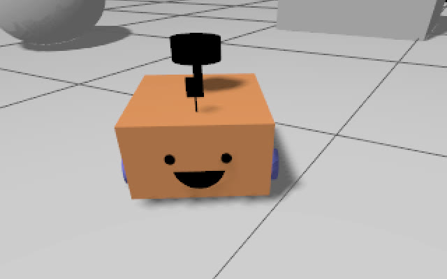
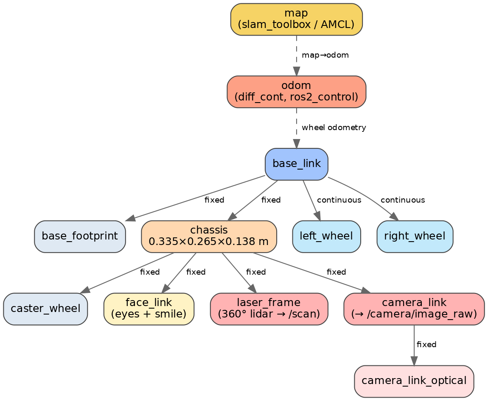
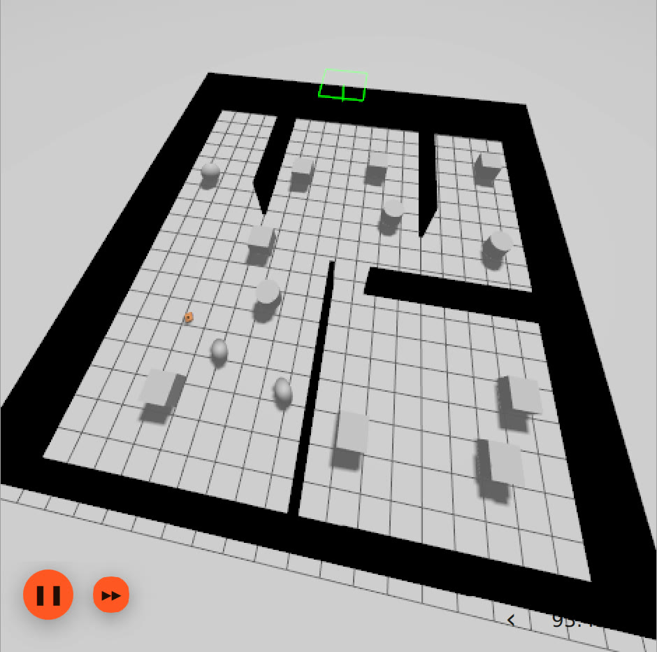
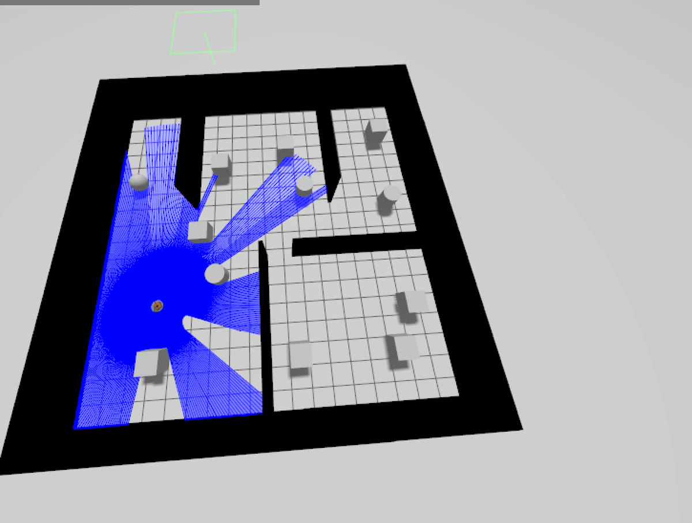
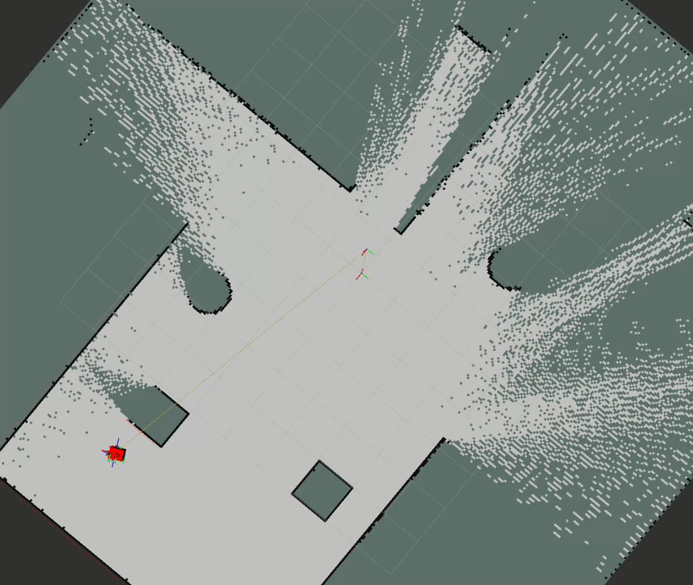
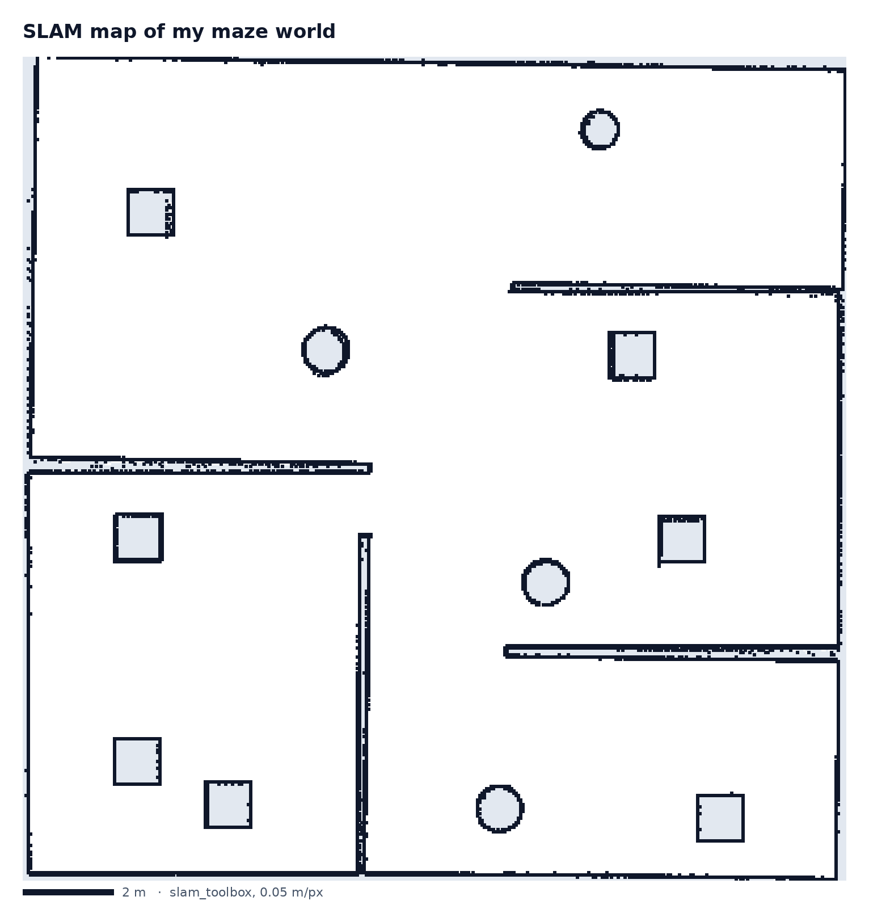
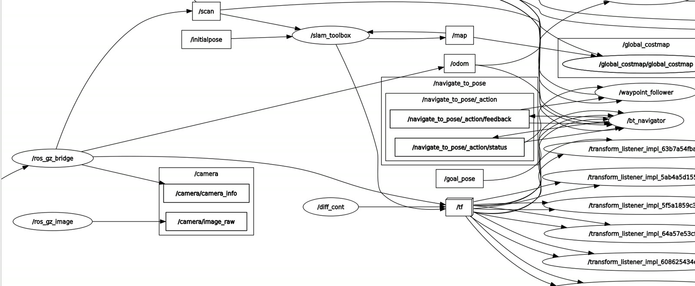

ProjectSIMULATION
Autonomous mobile robot: SLAM and navigation
A differential-drive robot in Gazebo that maps an unknown maze with SLAM, localises itself on the saved map with AMCL, then drives on its own to goal poses with Nav2.
- Context
- Academic project (PFR)
- Date
- December 2025
- Sensors
- 360° 2D LiDAR · camera · wheel odometry
- Stack
- ROS 2 Humble · Gazebo · slam_toolbox · Nav2
01The robot
- URDF/xacro model: a 0.335 × 0.265 × 0.138 m chassis, two drive wheels (r = 0.033 m) and a caster.
- I added a 360° LiDAR, a camera and a face (eyes and smile).
ros2_controlwith a diff-drive controller;twist_muxarbitrates between teleop and Nav2 velocity commands.


02A custom maze
I designed the world myself: an ~18 × 18 m maze split into rooms by walls, with box and cylinder obstacles. Gazebo is bridged to ROS 2 with ros_gz_bridge.


03SLAM mapping
senseLiDAR scans + wheel odometry
→
slam_toolboxonline async, 0.05 m resolution
→
mapsaved as .pgm/.yaml + pose graph
I tuned the slam_toolbox parameters, drove the robot through every room with keyboard teleop, and saved the map and the serialised pose graph.


05ROS graph
